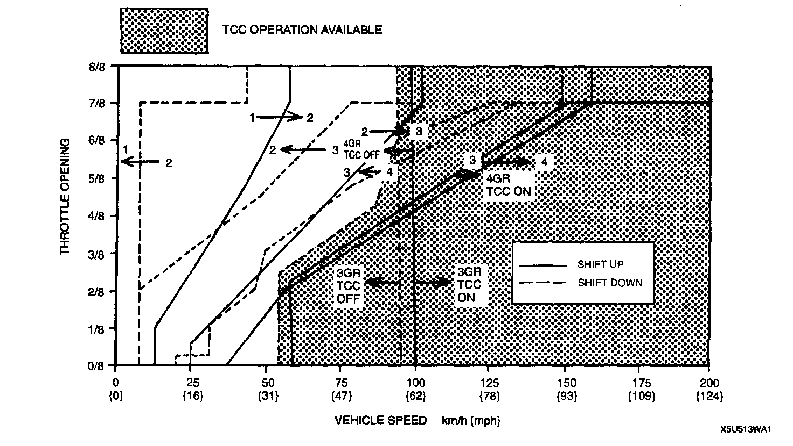
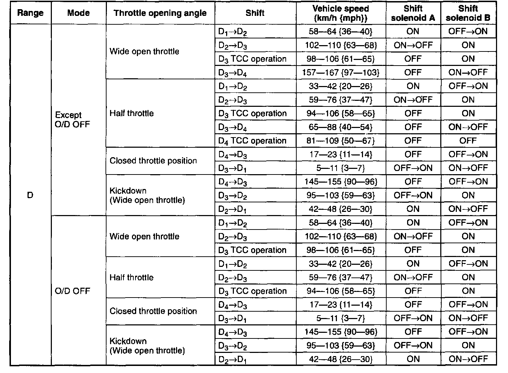
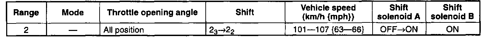

Road Test Procedures
ROAD TESTRoad Test Preparation
1. Inspect the engine coolant.
2. Inspect the engine oil.
3. Inspect the ATF levels.
4. Inspect the ignition timing.
5. Inspect the idle speed.

Shift Diagram
D Range Test
1. Perform road test preparation.
2. Shift the selector lever to D range.
3. Accelerate the vehicle with the half, and the wide open throttle.
4. Verify that 1 -> 2, 2 -> 3, and 3 -> 4 upshifts and downshifts are obtained. The shift points must be as shown in the vehicle speed at shift point table.
5. Drive the vehicle in fourth, third, and second gears and verify that kickdown occurs for 4 -> 3, 3 -> 2, 2 -> 1 downshifts, and that the shift points are as shown in the vehicle speed at shift point table.
6. Decelerate the vehicle and verify that engine braking effect is felt in fourth gear.
7. Drive the vehicle and verify that torque converter clutch operation is obtained. The operation points must be as shown in the vehicle speed at shift point table.
8. Select O/D OFF SW ON.
9. Accelerate the vehicle with the half, and the wide open throttle, and verify that 1 -> 2, 2 -> 3 upshift and downshift are obtained. The shift points must be as shown in the vehicle speed at shift point table.

Vehicle Speed At Shift Point Table
Note:
^ The shift solenoid electrical ON-OFF pattern in this chart describes the stabilized condition before and after shift control. The pattern may oscillate between ON and OFF momentarily while shifting-up or down.
^ This is normal.
2 Range Test
1. Perform road test preparation.
2. Shift the selector lever to 2 range.
3. Accelerate the vehicle with the half, and the wide open throttle.
4. Verify that downshifts are obtained. The shift points must be as shown in the vehicle speed at shift point table.

Vehicle Speed At Shift Point Table
Note:
^ The shift solenoid electrical ON-OFF pattern in this chart describes the stabilized condition before and after shift control. The pattern may oscillate between ON and OFF momentarily while shifting-up or down.
^ This is normal.
1 Range Test
1. Perform road test preparation.
2. Shift the selector lever to 1 range.
3. Accelerate the vehicle with the half, and the wide open throttle.
4. Verify that downshifts are obtained. The shift points must be as shown in the vehicle speed at shift point table.
Vehicle Speed At Shift Point Table
Note:
^ The shift solenoid electrical ON-OFF pattern in this chart describes the stabilized condition before and after shift control. The pattern may oscillate between ON and OFF momentarily while shifting-up or down.
^ This is normal.
P Position Test
- Shift into P position on a gentle slope. Release the brake and verify that the vehicle does not roll.